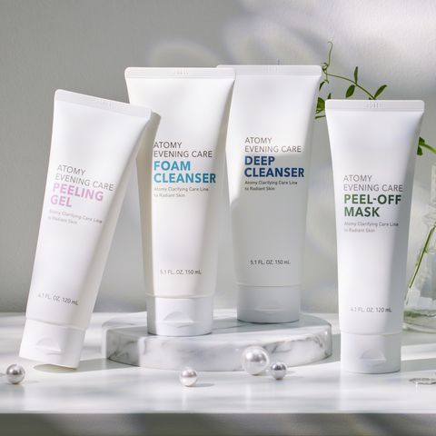
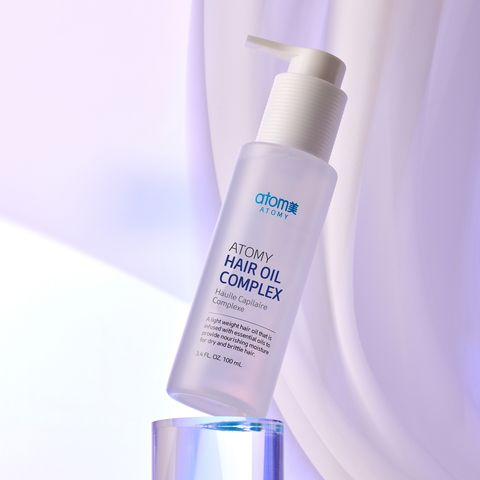
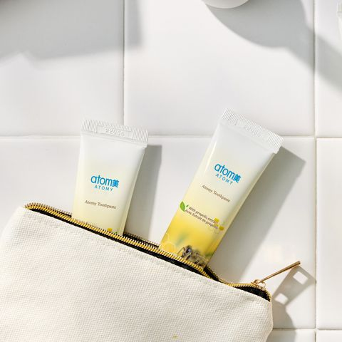
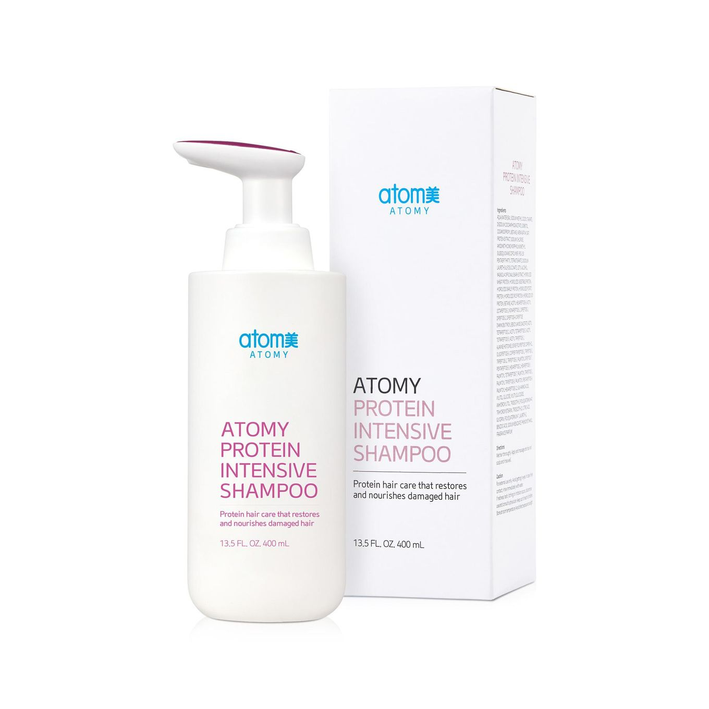
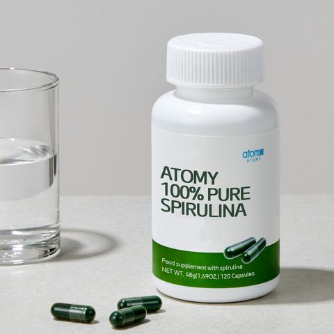
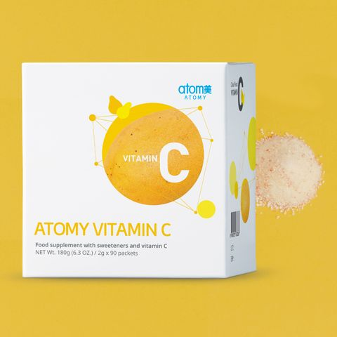

Cremă hidratantă pentru mâini, cu absorbție rapidă.
Formula cu extracte naturale lasă pielea catifelată,
protejează împotriva uscării și oferă un parfum discret.
Ideală pentru utilizare zilnică, nu lasă peliculă grasă.
Citește mai mult

Evening Care Set
Set complet pentru curățarea și îngrijirea tenului.
Include spumă de curățare, peeling gel, deep cleanser și
mască. Curăță în profunzime, exfoliază delicat și hidratează
pielea, lăsând-o luminoasă și sănătoasă.
Citește mai mult

Hair Oil Atomy
Ulei pentru păr cu efect de hidratare și strălucire.
Protejează firul de păr, reduce vârfurile despicate și oferă
un aspect sănătos. Se aplică pe părul umed sau uscat, nu
îngrașă și nu încarcă.
Citește mai mult

Pasta de dinți Atomy
Pasta de dinți cu propolis și ceai verde pentru igienă orală.
Protejează gingiile, previne cariile și oferă respirație
proaspătă. Fără parabeni, potrivită pentru întreaga
familie.
Citește mai mult

Șampon Atomy
Șampon cu ingrediente naturale pentru păr sănătos.
Curăță delicat scalpul, hidratează și oferă volum. Potrivit
strălucitor.
Citește mai mult

Spirulină Atomy
Supliment natural pentru energie și imunitate.
Conține proteine, vitamine și minerale esențiale. Susține
detoxifierea, crește vitalitatea și ajută la menținerea
sănătății generale.
Citește mai mult

Vitamina C Atomy
Supliment cu vitamina C pentru imunitate și energie.
Ajută la protecția celulelor, reduce oboseala și susține
sănătatea pielii. Gust plăcut, potrivit pentru adulți și
copii.